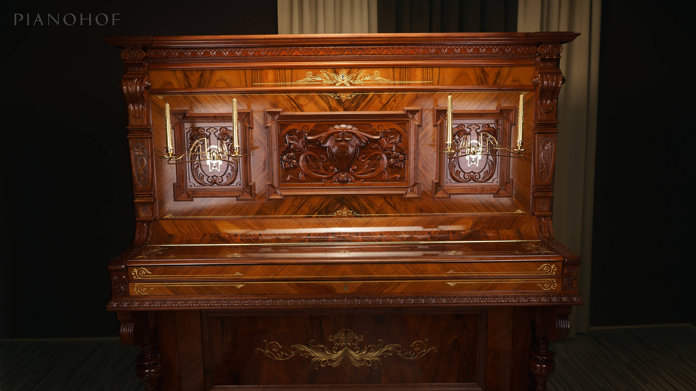

Klavier aufstellen: Platz für Instrument, Bank und Laufweg planen
Ein geeigneter Klavierplatz muss das Spielen, den Zugang und die Pflege ermöglichen. Dazu gehören die tatsächliche Gehäuseform, die bewegliche Bank, freie Durchgänge und ein möglichst gleichmäßiges Raumklima. Mit einer einfachen Stellskizze lassen sich viele Konflikte vor dem Transport erkennen. Die folgenden Schritte helfen, zwei mögliche Plätze miteinander zu vergleichen; eine Tragfähigkeitsprüfung des Gebäudes ersetzen sie nicht.
1. Die Stellfläche am konkreten Instrument messen
Notiere beim aufrechten Klavier Breite und Tiefe einschließlich vorstehender Gehäuseteile. Beim Flügel reichen Länge und größte Breite für eine erste Orientierung; für einen engen Platz ist auch seine gekrümmte Kontur wichtig. Verwende die Maße des vorhandenen Instruments oder die Zeichnung des genauen Modells, nicht die Abmessungen eines ähnlich aussehenden Klaviers.
Übertrage die Umrisse auf eine Raumskizze. Zeichne Heizkörper, Türflügel, Fenster und feste Möbel mit ein. Lose Papiermarkierungen auf dem Boden können die Eckpunkte veranschaulichen. Markiere außerdem, in welche Richtung die Klaviatur zeigt. So wird sichtbar, ob eine freie Wand tatsächlich genügend nutzbare Tiefe bietet.

2. Die Bank und den Spieler mit einplanen
Stelle die vorgesehene Bank vor die markierte Klaviatur und setze dich darauf. Prüfe nicht nur die Stellung während des Spielens: Ziehe die Bank so weit zurück, wie du es zum Hinsetzen und Aufstehen brauchst. Dieser Bewegungsbereich gehört zur Stellfläche. Ein Möbelstück, das im Sitzen weit genug entfernt wirkt, kann beim Aufstehen schon im Weg sein.
Prüfe den Zugang von beiden Seiten. Ein Mitspieler oder eine Lehrkraft sollte Platz nehmen können, ohne die Bank gegen ein anderes Möbel zu drücken. Bei einem Flügel darf die Bank nicht unbemerkt in den Hauptdurchgang ragen. Eine allgemein passende Zentimeterzahl gibt es dafür nicht; Bank, Körpergröße und Raumnutzung unterscheiden sich.
3. Türen und Laufwege in ihrer Bewegung prüfen
Öffne die betreffenden Zimmertüren bis zur üblichen Stellung und gehe die normalen Wege im Raum ab. Berücksichtige auch Schranktüren, Schubladen und den Zugang zum Fenster. Prüfe diese Bewegungen mit der zurückgezogenen Bank. Ein Durchgang, der nur bei exakt eingeschobener Bank frei ist, wird im Alltag leicht zum Engpass.
Plane ausreichend Raum für die am Instrument vorgesehenen beweglichen Teile und für Wartungsarbeiten ein. Die genaue Deckelbewegung eines Flügels und der Zugang zur Mechanik unterscheiden sich nach Bauart. Diese Punkte werden mit dem Transportteam oder Klaviertechniker vor dem endgültigen Aufstellen abgestimmt; das Instrument wird für die Raumplanung nicht selbst zerlegt.
4. Boden und Auflagepunkte berücksichtigen
Kawai empfiehlt für das Instrument einen festen, ebenen Untergrund. Prüfe, ob der vorgesehene Bereich erkennbare Unebenheiten hat und ob alle vorgesehenen Auflagepunkte dort Platz finden. Ein Foto des Fußbodens sagt dagegen nichts Verlässliches über seine zulässige Belastung aus. Bei ungeklärter Tragfähigkeit muss der Gebäudezustand fachlich beurteilt werden.
Notiere empfindliche Bodenbeläge und vorhandene Bodenschwellen für die Aufstellung. Passende Unterlagen oder Rollenauflagen werden für das konkrete Instrument ausgewählt. Beliebige Möbelgleiter, gefaltetes Papier oder lose Holzstücke sind keine geplante Auflage. Nach dem Aufstellen sollen Instrument und Bank stabil stehen; auffälliges Kippeln wird mit den Fachleuten geklärt.
5. Sonne, Heizung und wechselnde Feuchtigkeit beobachten
Betrachte den vorgesehenen Platz zu verschiedenen Tageszeiten. Fällt direkte Sonne auf Gehäuse oder Klaviatur? Strömt Heizungs- oder Klimaanlagenluft unmittelbar zum Instrument? Kawai nennt den Schutz vor direkter Sonne und raschen Temperatur- oder Feuchteschwankungen als wichtige Standortbedingungen. Ein aktuell schattiger Platz kann im Tagesverlauf anders belastet sein.
Temperatur und relative Feuchtigkeit werden direkt im vorgesehenen Bereich gemessen. Vergleiche mehrere Beobachtungen, statt aus einem einzelnen Wert auf das ganze Jahr zu schließen. Yamaha beschreibt Kondensation an Metallteilen und Feuchteaufnahme in Filzen bei raschen Temperaturänderungen. Die geeigneten Klimabedingungen werden anhand der Herstellerhinweise zum eigenen Instrument und des tatsächlich genutzten Raums beurteilt.

6. Den Klang nach dem Aufstellen vergleichbar prüfen
Spiele nach der Aufstellung einen kurzen, vertrauten Ausschnitt in mittlerer Lautstärke. Höre zuerst am Spielplatz und anschließend von einem zweiten Platz im Raum, während dieselbe Passage gespielt wird. Achte darauf, ob Töne lange nachhallen oder ob die Melodie aus der Entfernung schwer verständlich wird. Eine andere Hörposition kann das Klangbild deutlich verändern.
Halte beim Vergleich Fensterstellung, Vorhänge und Möblierung möglichst gleich. Wird zugleich vieles verändert, lässt sich die Ursache einer Klangänderung kaum zuordnen. Eine Verstimmung, ein einzelner auffälliger Ton oder eine ungleichmäßige Mechanik wird am Instrument geprüft. Die Raumplanung entscheidet über Platz und Umgebung; sie ersetzt keine Stimmung oder technische Einstellung.